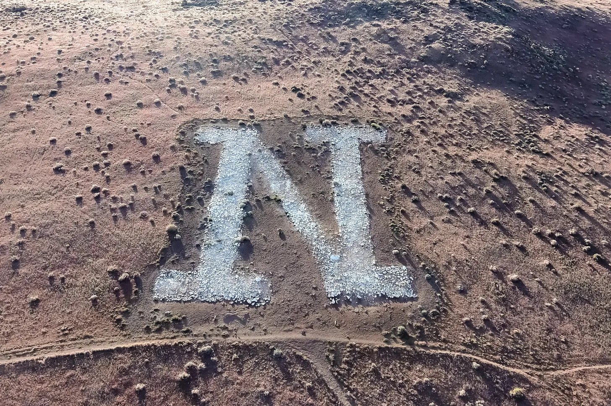
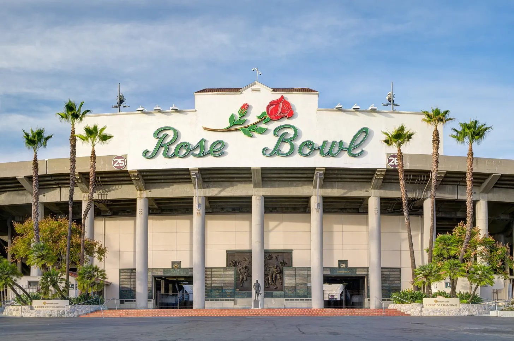

Elevation Change’s No. 8 Nevada heads to the city of angels to take on AP No. 7 UCLA, one of three remaining undefeated teams across the national stage.
Nevada, 2-1 in their last three games, has had an up-and-down year that’s started to level out during conference play. Wins against UTEP and San Jose State have not necessarily been undermined by close losses to Air Force and North Dakota State, two teams close to the top of the Mountain West standings. The offense has started to round out into form, and the Wolf Pack are looking more and more like a threat in the Mountain West.

Injuries have plagued Nevada this year, with three quarterbacks already starting a game for them this season. Luke Duncan, the third-stringer, made his second start of the year in the Wolf Pack’s win over San Jose State. Duncan’s first three years at the collegiate level were at UCLA, so if he gets the call on Saturday it could set up a potential revenge game.
In their history the Wolf Pack have not seen much success against top-10 teams, let alone against top-10 teams on the road. This will be the 10th time Nevada plays a top-10 team, and their sole win against an opponent of that caliber was back in 2010 against then-No. 3 Boise State.
UCLA will provide a difficult test for the Wolf Pack, but if there was a time for a major upset, now would be the best opportunity.
UCLA is 7-0 under first-year head coach Bob Chesney and at their highest ranking in the AP Poll in over 10 years. The Bruins remain the only undefeated Big 10 team, but injuries are creeping up on their talented roster.

Most notably, quarterback Nico Iamaleava was ruled out for the season following a knee injury suffered against Oregon. Backup Ty Diffenbach has played well in his stead, but the offense is notably less explosive than it was with Iamaleava at the helm.
The Bruins have only averaged just under 21 points per game since Iamaleava went down, but their defense hasn’t let up, allowing over 10 points once in their last three weeks.
The key to the game is going to be third down defense for both teams. Both the Bruins and the Wolf Pack rank top-10 in the country in third down conversion rate. Whoever is able to get the opposing offense off the field should have a better chance of coming away with the victory.
The Elevation Change model does not see this game going well for the Wolf Pack. UCLA stands as a 28.3-point favorite with an over/under of just 51, meaning that if Nevada wants to upset one of the nation’s best teams they’re going to have to be able to get more than two scores on the board. We think that the Bruins are going to pull it out, sending the Wolf Pack home with an empty bag of candy Halloween night.
Prediction
- UCLA
- 40
- Nevada
- 11